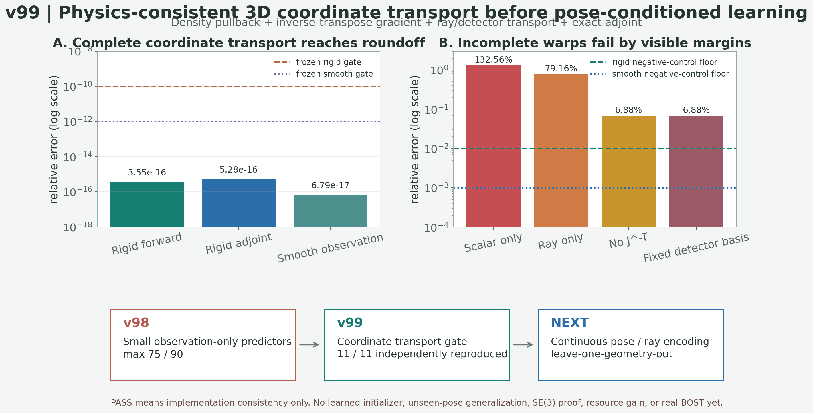

优化量
同精度前提下减少完整 A/A^T；随后再实测 fresh-process wall time 与 whole-pipeline peak RSS。
我研究的不是用神经网络替代物理，而是让一个只读取多视角观测与已知几何的低成本初始化器，为 CGLS / PCGLS 提供更好的三维起点。在最终场、完整梯度、内部梯度和观测误差都不劣于标准重建时，再判断它是否真正减少昂贵的 A/A^T 调用、端到端时间与峰值内存。
algorithm_breakthrough，未过外部与真实实验门背景纹影从多视角位移反推三维折射率或密度场，是病态且计算昂贵的逆问题。C 路线把学习模块严格限制为 warm initializer，后端仍使用显式物理算子和未修改迭代器，因此可以分别核查精度、调用成本、真实资源消耗和失效边界。
32×16×16 粗网格场同精度前提下减少完整 A/A^T；随后再实测 fresh-process wall time 与 whole-pipeline peak RSS。
逐单元检查 field、full-gradient、interior-gradient、observation 相对 Zero-K2 / Zero-K4 的八个门。
尚未训练可部署的大模型，尚未证明跨反应流工况泛化，也尚未接入 OERF 真实实验数据。
正结果说明哪一段机制值得保留，负结果说明下一步不能继续把算力花在哪里。
1515/1515 精度兼容；exact 调用减半，fresh wall 中位下降 43.49%，三类 RSS p90 过门。仅限已开封 PoolFire 同族代理。
84/84 对 78/90；12 个失败全部暴露在内部梯度，说明全局 residual gate 看不见局部风险。
85/90 可行，五个单元的严格区间为空；增加一个阻尼系数无法修复局部梯度。
新增方向非退化但严格容量仍为 89/90，最后越线只减少 1.55%。由此停止堆全局径向阶数。
F12+ 没有复现 F30 的净伤害，停止围绕单帧扩建局部窗口。
九维线性预测存在信号，但候选集合不足；这一负结果直接触发 v96 的表示结构升级。
四个 residual/geometry-only 频谱方向修复旧九维 family 的最后缺口；三档几何全部 30/30，独立复算逐值一致。
条件容量门关闭四系数训练，要求旧九维与新四维联合适配。
mean 与 linear ridge 同为 75/90，RBF 为 71/90；270 次独立精确回放确认普通坐标回归未封口。
两个三维格点旋转和一个光滑剪切均通过；完整输运达到约 1e-16，遗漏 Jacobian 或相机量时误差为 6.9%–133%。

从 2026-07-06 起，完整保留正式运行、独立复算、负结果、路线切换和证据边界。协议、下载、网页和测试数量只算工程保障，不算算法成果。
关键数字必须由第二条实现重建输入、指标、门和调用账；验证未通过时不进入主页结论。
v98 排除普通联合回归；v99 已把标量、梯度、相机和伴随的坐标输运闭合。现在只推进连续 pose/ray 与未见几何验证。
单工况容量、漂亮均值、调用数下降或页面完善，都不能单独写成算法突破与论文成功。
任何早期阶段失败都会准确记录并重排方法，不通过更大的网络掩盖表示或物理问题。
A/A^T。高速反应流会产生连续帧和多视角数据。每帧少一次完整 forward / adjoint，收益会随实验批次持续累积。
学习模块只生成起点，最终解仍由显式成像模型和经典 Krylov 求解器精化，便于诊断误差来源。
Case 6 证明平均场变好不等于内部梯度安全。逐单元八门能直接暴露会损伤火焰局部结构的候选。
研究路线由最新负证据驱动，而不是由模型名、算力规模或已经投入的时间驱动。
不再只输入三个 geometry ID：显式输入每视角相机原点/方向、探测器 u/v 基、内参与射线参数，公平比较连续 pose/ray encoding 和参考域 canonicalization，并用 leave-one-geometry-out 同时检查容量与严格 observation-only 预测；通过后才训练最小 sentinel。
只有表示容量全过、严格 observation-only 小模型出现稳定外折 headroom，且 CPU 原型确认训练吞吐成为瓶颈时才租算卡。
公开独立工况通过后，接入位移图、相机内外参、视角定义、重复测量噪声、现有重建接口和认可基线。
{kind=link}